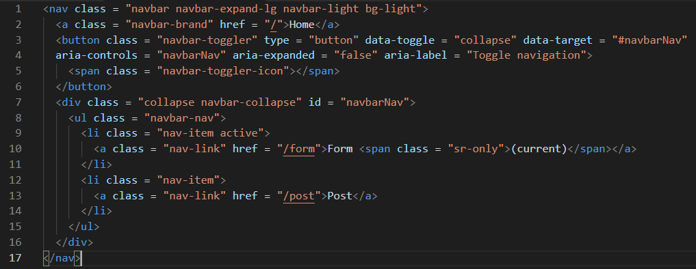
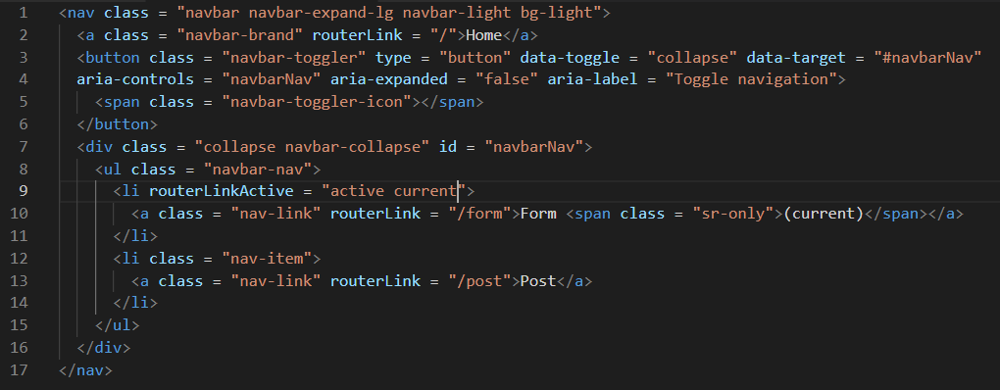

10. Routes
Praktikum - Bagian 1: Configure the Routes
- Membuat komponen posts, form-member, navbar, not-found, dan home
- Buka file app.module.ts. Memastikan komponen pada langkah 1 sudah terdaftar seperti berikut:
- Menambahkan module router pada file app.module.ts seperti berikut:
- Buka file navbar.component.html kemudian menambahkan code sebagai berikut:
- Buka file navbar.component.html kemudian ganti code menjadi sebagai berikut:
- Hasilnya seperti berikut:
Praktikum - Bagian 2: Router Outlet
- Buka file app.component.html kemudian menambahkan code sebagai berikut:
- Hasilnya seperti berikut
- Menjalankan link localhost:4200/form
- Menjalankan link localhost:4200/post
- Menjalankan link localhost:4200/coba
Penjelasan langkah 3, 4 dan 5: Membuat beberapa outlet untuk link. Setiap link mempunyai component sendiri kecuali link localhost:4200/coba karena tidak dibuatkan component
Praktikum - Bagian 3: Add Link
- Buka file navbar.component.html kemudian menambahkan link pada href tiap menu seperti berikut:

Jika klik navbar home dan post, maka link akan berubah menjadi .../home dan .../post
- Memodifikasi href menjadi routerLink pada halaman navbar.component.html seperti berikut:
- Hasilnya seperti berikut:
- Memodifikasi class li pada file navbar.component.html menjadi seperti berikut:

- Hasilnya seperti berikut:
Praktikum - Bagian 4: Accessing Route Parameter
- Membuat komponen baru bernama profile dengan perintah ng g c profile
- Buka file app.module.ts kemudian menambahkan route untuk profile sebagai berikut:
- Buka file home.component.html kemudian menambahkan code sebagai berikut:
- Modifikasi file profile.component.ts menjadi seperti berikut:
- Hasilnya seperti berikut:
Link Joko Bowo mempunyai id, yang terletak pada routerLink
- Modifikasi file profile.component.ts menjadi seperti berikut:
Hasilnya seperti berikut: